Steam 플랫폼 게임 성공요인 분석 및 시각화
Python · SQL · Selenium · Databricks · Power BI
🎯 프로젝트 목표
- 게임 개발사 대상 리뷰 관리 및 운영 지원 B2B 대시보드 제공
- Steam 리뷰 데이터 분석을 통해 게임의 성공 요인 도출
📌 프로젝트 배경
- Steam의 게임 리뷰는 게임 품질, 만족도, 문제점, 인기 등을 실시간 반영
- 리뷰 점수와 개수는 상점 노출·추천 알고리즘·판매량과 직결
- 유저 리뷰 데이터 관리는 게임의 성공과 지속성에 중요한 역할
✨ 프로젝트 필요성
- 개발사와 유저 간 소통 채널 확보
- 리뷰 데이터에서 핵심 인사이트를 도출하여 성공 가능성 향상
- 게임 개선 및 업데이트 방향성을 데이터 기반으로 지원
- 리뷰 반응 추적을 통한 유저 니즈 파악
👥 팀원 구성 및 역할
👨 김시온 (Azure Resource Manager)
- 데이터 수집 및 크롤링 환경 구축
- Databricks 파이프라인 설계
- 리뷰 데이터 전처리 및 분석
- ERD 및 DB 관리
- Power BI 연동 및 대시보드 테스트
👩 송누림 (Project Leader)
- 분석 주제 및 시나리오 기획
- Feature 후보 도출
- EDA 및 분석 인사이트 도출
- 대시보드 구성 및 발표자료 정리
👩 김태연 (Azure-Git)
- 리뷰 텍스트마이닝 및 감정 분석 모델링
- Feature 도출 및 GOLD 레이어 작성
- Power BI 시각화 준비
👨 김지민 (Project Manager)
- Steam API 크롤링 및 리팩토링
- 데이터 병합 및 네이밍 규칙 정의
- 데이터 파이프라인 관리 및 발표 지원
👩 이민지 (Git Resource Manager)
- 유저 클러스터링 및 Feature 설계
- 통계 검증 및 분석 인사이트 정리
- Power BI 시각화 기획
👨 윤지찬 (Azure Resource Manager)
- 리뷰 데이터 크롤링 테스트
- API 수집 모듈 설계
- DB 관리 및 전처리 지원
- 발표자료 취합 및 검수
📊 데이터 수집
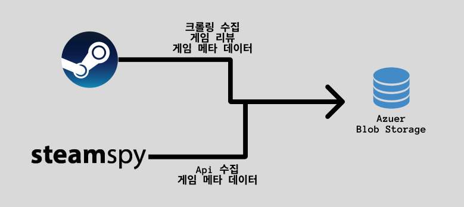
Steam API · Selenium 크롤링 · Top-tier vs Other 게임 선정
⚙️ 데이터 전처리 및 분석
1) 데이터 전처리
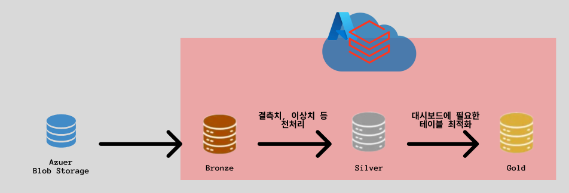
- 결측치, 이상치 제거
- 텍스트 정제 (불용어, 특수문자, URL 등 제거)
- 파생 컬럼 생성
2) 데이터 분석
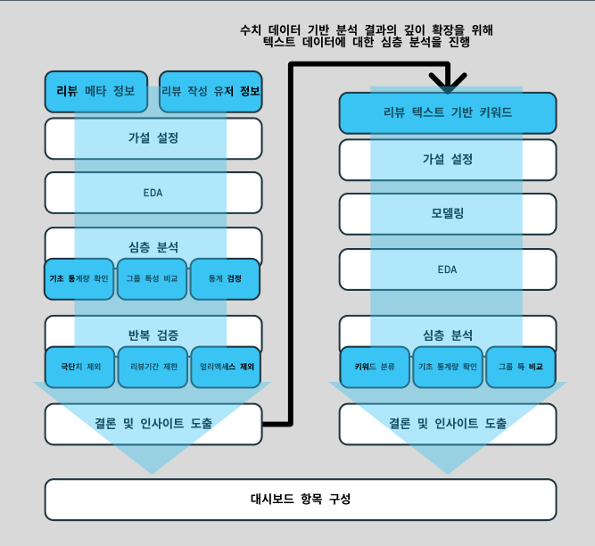
상위 게임/일반 게임 비교, 비모수 검정, 반복 검증, 클러스터링 분석
📈 대시보드 (서비스)
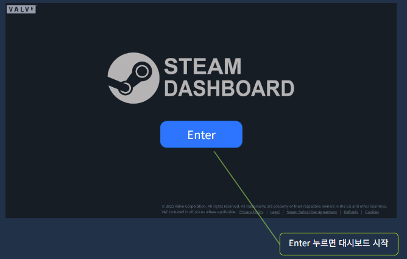
무료 대시보드
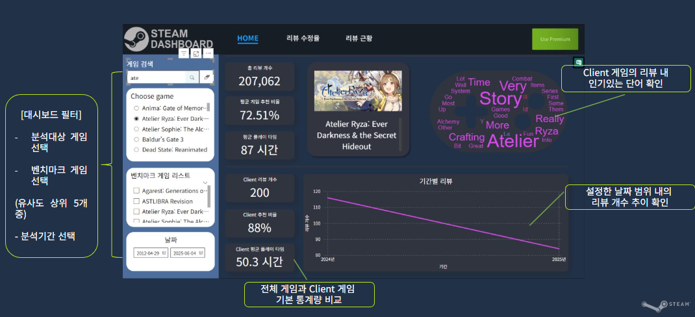
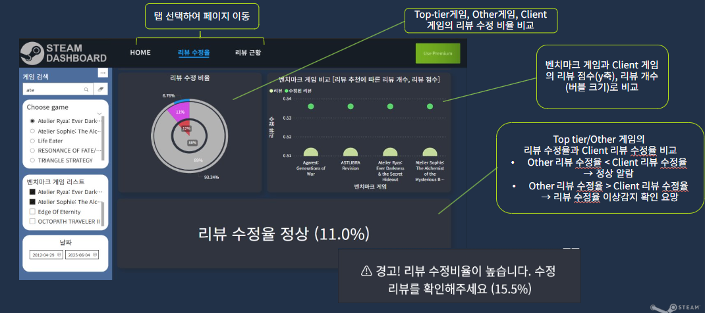
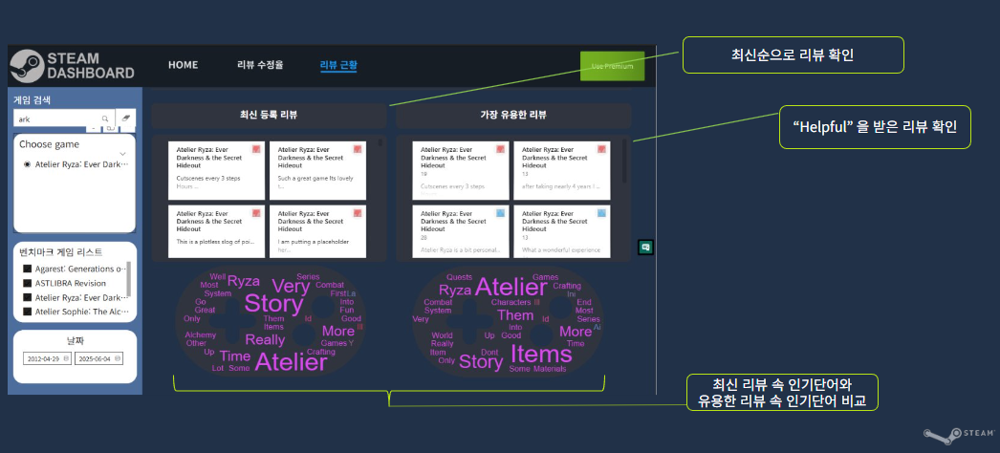
유료 대시보드
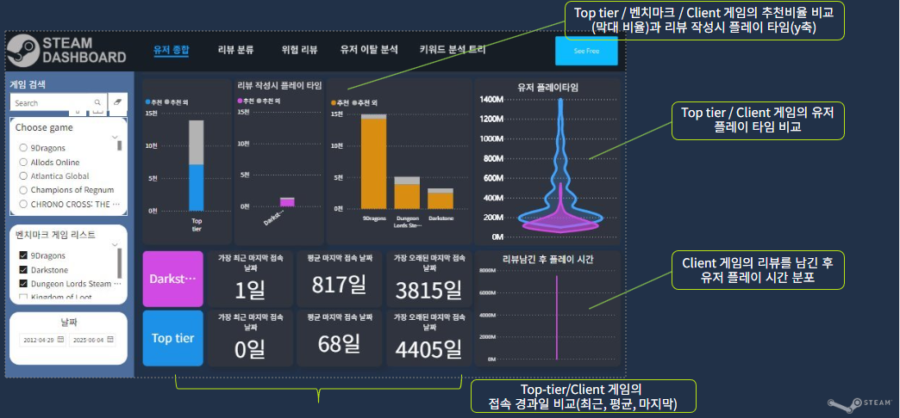
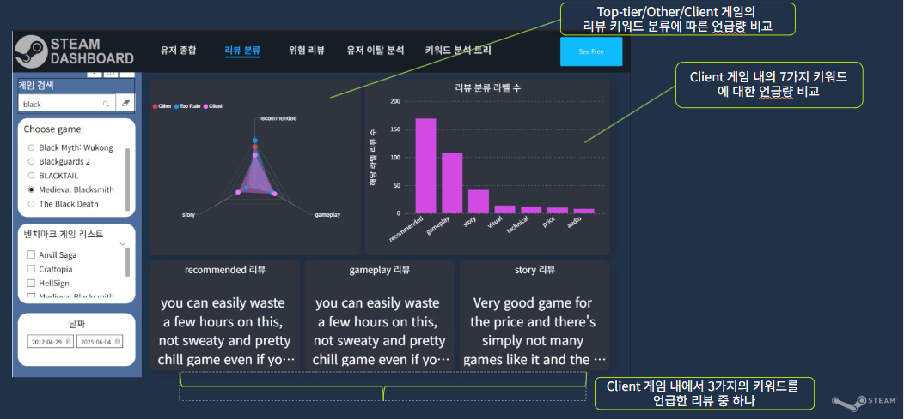
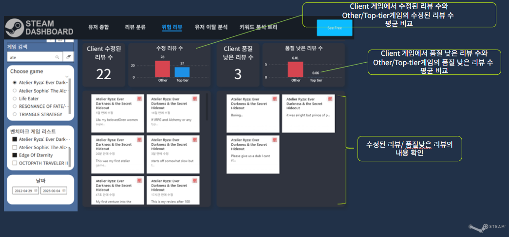
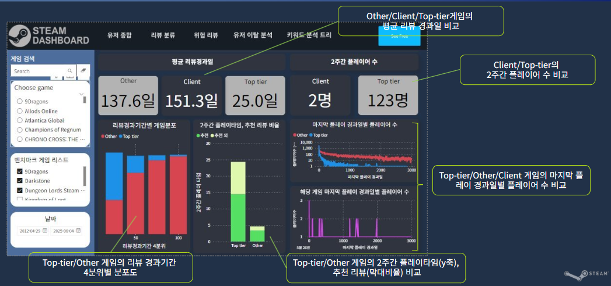
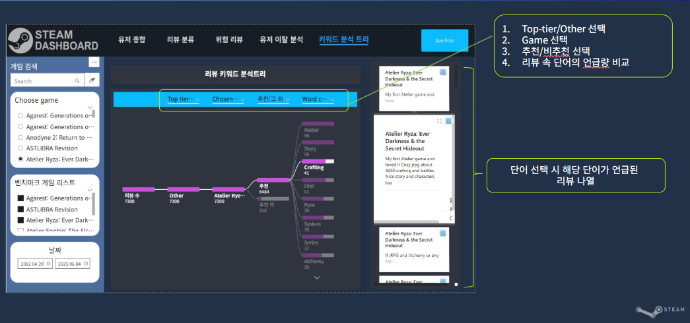
🚧 문제 상황 및 해결
- 데이터 선정 문제 → Steam 플랫폼으로 주제 확정
- 작업 효율 문제 → 역할 분리 (수집팀/분석팀)
- 요청 제한/이상치 문제 → 요청량 조절 및 데이터 정제
- 성공/비성공 정의 문제 → 최고 평가·수익 게임 기준
- 모델링 성능 문제 → Databricks GPU 클러스터 활용
- 데이터 불균형 → 대시보드 기간 슬라이서로 대응
🚀 기대효과
- 유저 피드백의 체계적 관리 및 빠른 이슈 파악
- 게임 품질 및 UX 개선으로 업데이트 방향성 확보
- 시장 트렌드 및 경쟁작 분석으로 차별화 전략 지원
- 리뷰 강점을 활용한 마케팅 및 커뮤니티 전략 수립
- 데이터 기반 의사결정 및 리소스 최적화
- 장기적 성공 가능성 확보 및 수익 증대